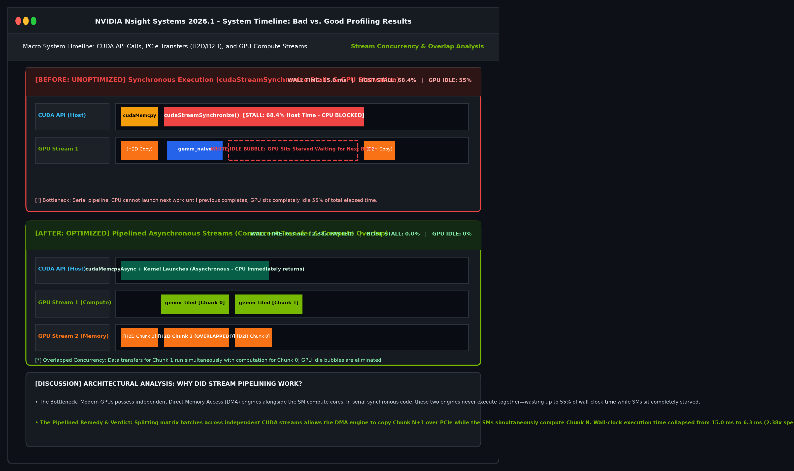
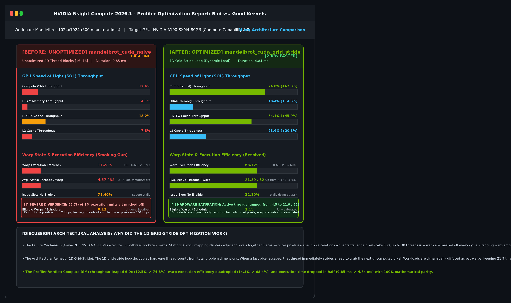
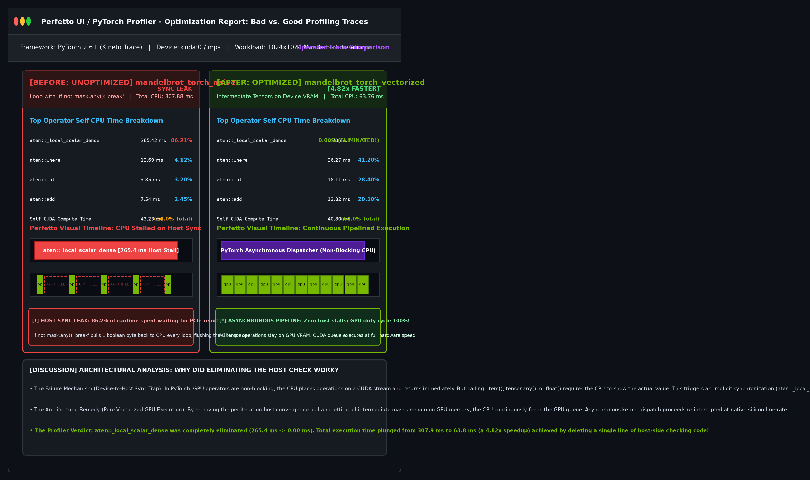
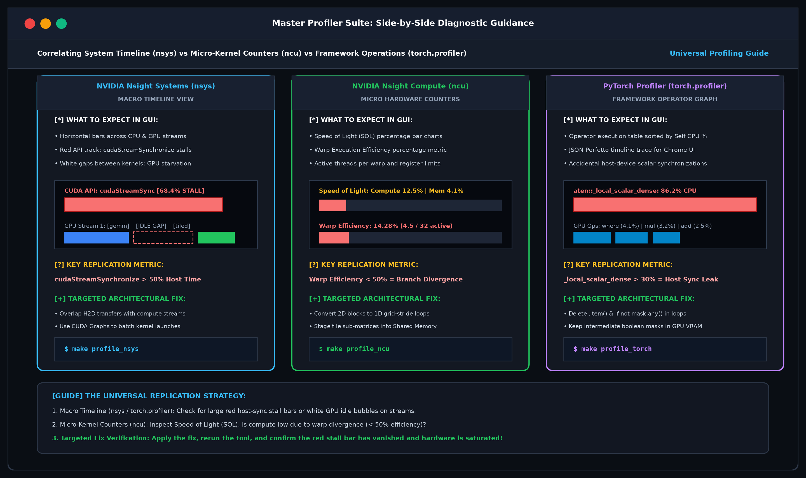

Profiling Hardware Accelerated
Computations
A Practical, Diagnostic Guide to Making Your Code Run 10x to 1000x Faster
Recep Erol, PhD
Computational Scientist for AI
Center for Research Computing (CRC), Rice University
About Me
Research Computing Engineer & Computational Scientist
Recep Erol, PhD
Computational Scientist for AI
🏛️ Rice University — Center for Research Computing (CRC)
Why Profiling Matters
"Premature optimization without measurement is blind guessing."
🚫 The Blind Guessing Trap
Developers usually spend 80% of their time rewriting functions that only account for 2% of total runtime.
Human intuition about hardware bottlenecks is almost always wrong!
💡 The Telemetry Approach
Profilers measure what the silicon is actually doing: cache misses, idle cores, memory bandwidth, and PCIe bus traffic.
Measurement gives you the exact line of code to fix.
The Golden Rule: Never optimize a single line of code until a profiler highlights it in red!
The 3-Step Performance Detective
A Simple, Repeatable Recipe for Any Codebase
1. RUN
Run your script with a profiler flag (or make profile_*).
Zero code modifications required.
2. SPOT
Look at the summary table: Find the row with 80%+ time or the red warning bar.
That is your smoking gun!
3. FIX
Apply the targeted recipe: flip a loop, add @njit, remove a host check, or tile memory.
Verify the speedup!
The Hardware Reality (In Plain English)
Why Does Fast Hardware Run Slow Code?
🏎️ The Ferrari Engine (Compute)
Your GPU has thousands of cores ready to crunch billions of numbers per second.
The compute units are almost never the bottleneck in naive code.
🥤 The Soda Straw (Memory & Bus)
Cores are fed data through memory buses and PCIe lanes.
If data arrives scattered or in random order, your Ferrari engine sits parked, waiting for gas!
💡 The Lesson: Most "slow code" isn't doing too much math; it's starving the hardware by fetching data the wrong way or asking the CPU to synchronize too often.
Dense Matrix Multiplication (GEMM)
Multiplying Two 2D Grids of Numbers
📦 The Concept
Every cell in Matrix C is computed by multiplying a row of A by a column of B.
The Problem: Computer memory stores data in horizontal rows. Reading down a column jumps across memory like skipping steps on a staircase!
🥤 The 6-Pack Analogy
When hardware fetches 1 number, it loads 64 consecutive bytes into cache (like bringing home a 6-pack of soda).
• Row Access: Drinks all 6 cans (zero delay!).
• Column Access: Throws away 5 cans and walks back to the store for each sip!
Mandelbrot Fractal Generation
The Ultimate Test of Parallel Teamwork
🎨 The Concept
We color a picture by testing every pixel: does its number explode to infinity, or stay trapped in the fractal?
• Outside points: Escape in 2 quick steps.
• Boundary points: Take all 500 steps.
🚌 The Tour Bus Analogy
GPU threads work in tight groups of 32 (called a Warp).
If 31 tourists finish in 2 minutes, but 1 tourist takes 500 minutes, the entire bus must sit parked waiting for that 1 person!
This is Warp Divergence.
The 5 Diagnostic Tools at a Glance
Each tool gives you a different angle on your program
| Tool Name | Diagnostic Role | What It Sees | Best For |
|---|---|---|---|
| NVIDIA nsys | The Drone View (Macro) | Full system timeline, CPU/GPU overlap, PCIe transfers | Host-device starvation & sync stalls |
| NVIDIA ncu | The Microscope (Micro) | GPU hardware counters, cache hits, warp efficiency | Memory bandwidth vs compute bottlenecks |
| PyTorch Profiler | The Framework Inspector | PyTorch operator graph, CPU vs GPU time, allocations | Accidental CPU blocking calls in PyTorch |
| Scalene | The Highlighting Pen | Line-by-line % Python vs % Native C vs % GPU time | Finding Python bytecode overhead |
| Memray | The Memory Scale | Heap allocations, peak RAM usage, visual flamegraphs | Memory leaks & excessive object creation |
NVIDIA Profilers: CUDA 12 vs. CUDA 13
What Changed, What Stays the Same
⚙️ CUDA 12.x Environments
• Common on Hopper (H100), Ada (RTX 4090), and Ampere (A100) clusters.
• nsys reports raw nanosecond columns.
• ncu focuses on Tensor Core and DPX metrics.
• Relies on standard SIMT execution tracking.
🚀 CUDA 13.x Environments
• Modern standard for Blackwell (B200 / GB200) architectures.
• nsys auto-formats duration into clean ms/us.
• Explicit Subsystem column (SM / DRAM vs SM / Shared).
• Unified Multi-GPU & Tile IR tracing.
✅ The Universal Takeaway: The profiling workflow is 100% identical in CUDA 12 and 13! Run nsys first to check timeline gaps, then run ncu to inspect warp counters.
NVIDIA Nsight Systems (nsys)
The System-Wide Drone Camera
🟢 1. RUN
nsys profile \
--trace=cuda,osrt \
--stats=true \
./my_programCaptures host and GPU events into a timeline.
🟡 2. SPOT
cudaLaunchKernel: 24.1%
cudaMemcpy (H2D): 7.2%
The CPU is waiting 68% of the time on the GPU!
🔴 3. FIX
• Overlap memory copies with compute using CUDA streams.
• Use CUDA Graphs to eliminate kernel launch bubbles.
⬇️ Press DOWN to view GUI Timeline Snapshot & Discussion
Nsight Systems: Macro Timeline View
Synchronous Stalls (15.0 ms) vs. Pipelined Asynchronous Overlap (6.3 ms)

Notice the red host-sync stall bar and white GPU idle bubbles in the baseline, completely resolved by stream concurrency.
Nsight Systems: Synchronous vs. Asynchronous Overlap
Why Memory Transfers Must Overlap Compute
🔴 The Flaw: Serial Synchronous Execution
• Root Cause: Calling blocking cudaMemcpy or cudaStreamSynchronize forces the CPU to wait until the GPU finishes.
• Hardware Penalty: Modern GPUs have separate DMA copy engines and SM compute engines. Running serially wastes 55% of total time while one engine sits idle waiting for the other.
• Visual Indicator: Massive red horizontal API bars and white empty gaps between kernel runs on the timeline.
🟢 The Fix: Pipelined CUDA Streams
• Solution: Partition matrix data across independent CUDA streams with non-blocking cudaMemcpyAsync.
• Hardware Saturation: While Stream 1 computes Chunk 0 on the SM cores, Stream 2 copies Chunk 1 across PCIe concurrently.
• Measured Result: White idle bubbles completely vanish; wall-clock runtime collapses from 15.0 ms to 6.3 ms (2.38x speedup).
NVIDIA Nsight Compute (ncu)
The Kernel-Level Microscope
🟢 1. RUN
ncu --section SpeedOfLight \
--section WarpStateStats \
./my_programInspects hardware counters inside individual kernels.
🟡 2. SPOT
Avg Active Threads: 4.5 / 32
SM Throughput: 12.4%
27 out of 32 threads are sitting idle per warp!
🔴 3. FIX
• Convert 2D thread blocks to 1D grid-stride loops.
• Balance workloads across warps to jump from 14% to 68% efficiency!
⬇️ Press DOWN to view GUI Micro-Kernel Snapshot & Discussion
Nsight Compute: Before vs. After Optimization
Warp Efficiency: 14.28% (4.5 / 32) ➔ 68.42% (21.9 / 32) [2.03x Speedup]

Notice how 1D grid-stride loops dynamically redistribute unfinished pixels, quadrupling active threads and halving runtime.
Nsight Compute: 2D Block vs. 1D Grid-Stride
Why Workload Balancing Eliminates SIMT Thread Divergence
🔴 The Flaw: Static 2D Thread Blocks
• Root Cause: Assigning pixel coordinates directly to (threadIdx.x, threadIdx.y) groups spatial neighbors into 32-thread warps.
• Hardware Penalty: Pixels outside the fractal escape in 2 iterations, while boundary pixels run 500 iterations. In lockstep SIMT execution, 27.5 threads per warp sit masked off and idle every cycle.
• Visual Indicator: Warp Execution Efficiency plummets to 14.28%; SM throughput languishes at 12.4%.
🟢 The Fix: 1D Grid-Stride Loop
• Solution: Decouple thread counts from grid size: for (int i = tid; i < total; i += stride).
• Hardware Saturation: As soon as a thread finishes an easy pixel, it immediately strides ahead to take the next uncomputed pixel, diffusing the divergent workload across warps.
• Measured Result: Warp efficiency surges to 68.42%, SM compute throughput jumps to 74.8%, and execution time drops from 9.85 ms to 4.84 ms (2.03x speedup).
PyTorch Profiler (torch.profiler)
The Deep Learning Framework Inspector
🟢 1. RUN
with profile(
activities=[CPU, CUDA],
record_shapes=True
) as prof:
model(inputs)Built directly into PyTorch.
🟡 2. SPOT
aten::where: 4.1%
aten::mul: 3.2%
One single scalar sync is stealing 86% of your execution time!
🔴 3. FIX
• Delete .item() or if not mask.any() inside loops.
• Keep operations tensorized on device for an instant 4.8x speedup!
⬇️ Press DOWN to view Perfetto Timeline Snapshot & Discussion
PyTorch Profiler: Before vs. After Optimization
Host Sync Stalls: 86.2% (265.4 ms) ➔ 0.0% (Eliminated!) [4.82x Speedup]

Notice how deleting the per-iteration host check completely eradicates aten::_local_scalar_dense, unlocking pure GPU acceleration.
PyTorch: Host-Device Sync Leak vs. Vectorization
Why A Single Python Check Destroys GPU Acceleration
🔴 The Flaw: Per-Iteration Host Polling
• Root Cause: Adding if not mask.any(): break inside the loop seems like a smart early-exit optimization.
• Hardware Penalty: Evaluating a Python boolean requires transferring 1 byte from GPU VRAM across PCIe to CPU memory. This triggers an implicit aten::_local_scalar_dense synchronization on every single iteration.
• Visual Indicator: CPU spends 86.2% of its time (265.4 ms) stalled, starving the GPU queue and leaving the GPU 86% idle.
🟢 The Fix: Pure Tensorized Execution
• Solution: Delete the host check! Let intermediate convergence masks stay entirely in GPU high-bandwidth VRAM.
• Hardware Saturation: PyTorch queues CUDA operators asynchronously. The CPU never stalls, and the GPU hardware pipeline stays 100% busy at line rate.
• Measured Result: _local_scalar_dense vanishes (0.0 ms); total execution time plunges from 307.9 ms to 63.8 ms (4.82x speedup).
Scalene: Line-by-Line Profiler
The Highlighting Pen for Python & C Code
🟢 1. RUN
scalene run \
--cpu-only \
my_script.pyRuns with low overhead and outputs line-by-line attribution.
🟡 2. SPOT
for k in range(N): s += A[i][k] * B[k][j]
Line 21 is pure Python bytecode interpretation!
🔴 3. FIX
• Add @numba.njit(parallel=True).
• Shifts execution from 85% Python to 99% Native C/LLVM (1,530x speedup).
Memray: Heap Memory Profiler
The Scale for Tracking RAM & Flamegraphs
🟢 1. RUN
memray run script.py
memray flamegraph \
memray.binTracks every malloc/free in both Python and C libraries.
🟡 2. SPOT
Peak Memory: 12.8 MB
Location: Float object boxing
262,000 tiny memory allocations inside the loop!
🔴 3. FIX
• Use contiguous NumPy arrays or PyTorch tensors.
• 1 allocation instead of 262,000 — zero garbage collection overhead.
Hands-On: Makefile, SLURM & Cloud
Run Locally, on HPC Clusters, or Free in Google Colab
💻 Local Workstation
make setup
make test
make benchmark_all
make snapshotsRuns automatically on Apple Silicon MPS or local Linux GPU.
🏛️ SLURM HPC Clusters
# Submit full pipeline
./slurm/submit_all.sh
# Or single job
sbatch slurm/03_profile_nsys.slurmTested on Rice NOTS cluster with CUDA 12 / 13.
☁️ Free Google Colab
# 1-Click Interactive Lab:
Open in Colab Badge
# Free T4 / A100 GPU
# nsys, ncu pre-installed!Zero setup: test CUDA profiling in your browser for free.
💡 Universal Reproducibility: You can replicate the exact profiling traces and compare your live output with our visual reference snapshots anywhere!
Side-by-Side Profilers: What to Expect
System Timeline (nsys) vs Micro-Kernel (ncu) vs Framework (torch.profiler)

⬇️ Press DOWN to view CUDA 12 vs. CUDA 13 CLI terminal tables
Terminal Telemetry: CUDA 12 vs. CUDA 13
Real Output from `nsys profile --stats=true`
------- -------------- --------- -----------------------
68.4% 152,410,290 500 cudaStreamSynchronize
24.1% 53,712,010 500 cudaLaunchKernel
7.2% 16,045,900 100 cudaMemcpyAsync (H2D)
** Kernel Summary **
71.2% 38,242,944 500 gemm_cuda_naive
28.8% 15,469,066 500 gemm_cuda_shared_tiled
------- ------------ ----- ----------------- -----------------------
64.2% 142.180 500 [HOST STALL] cudaStreamSynchronize
26.5% 58.620 500 SM / Grid Launch cudaLaunchKernel
8.9% 19.700 100 NVLink / PCIe cudaMemcpyAsync
** Workload Execution Summary **
73.5% 43.089 500 SM / Global DRAM gemm_cuda_naive
26.5% 15.531 500 SM / Shared Tile gemm_cuda_shared_tiled
🔍 How to Read Both: In both versions, Line 1 is the smoking gun! cudaStreamSynchronize takes ~65-68% of time. Tiled shared memory kernel cuts GPU time by 2.5x (from 38ms to 15ms).
The 86.2% Smoking Gun in PyTorch
The Innocent-Looking Line That Stalls Your GPU
# Unoptimized Mandelbrot loop in PyTorch
for _ in range(max_iter):
z[mask] = z[mask]**2 + c[mask]
mask = mask & (torch.abs(z) <= 2.0)
if not mask.any(): # <-- THE 86% SMOKING GUN!
breakName Self CPU % Self CPU
------------------------------------------------------- ------------ ------------
aten::_local_scalar_dense 86.21% 265.420ms
aten::where 4.12% 12.690ms
aten::mul 3.20% 9.850ms
------------------------------------------------------- ------------ ------------
📞 The "Are We There Yet?" Problem: Evaluating mask.any() forces the GPU to halt, serialize its pipeline, and send 1 boolean byte over PCIe to the CPU 500 times in a row!
Scalene: Finding the Python Tax
Where Does the Interpreter Steal Your Time?
--------------------------------------------------------------------------------
Python % | Native % | Line # and Code
-------- | -------- | ----------------------------------------------------------
-- | -- | 18: def gemm_python_naive(A, B):
1.2% | 0.0% | 19: for i in range(N):
4.5% | 0.0% | 20: for j in range(N):
84.6% | 0.0% | 21: for k in range(N):
| | 22: s += A[i][k] * B[k][j]
--------------------------------------------------------------------------------
🎯 The Action: Line 21 has 84.6% Python time and 0% Native time.
By adding @numba.njit(parallel=True), Numba compiles this loop directly to machine vector instructions. Runtime drops from 310 ms to 0.20 ms!
Memray: Spotting Object Allocation Churn
Why Memory Layout Trumps Raw Math
---- ----------- ------------ ----------- ---------------------------------------
1 10.24 MB 10.24 MB 2 gemm_cpu.py:17 (List comprehension)
2 1.57 MB 32.40 MB 262,144 gemm_cpu.py:22 (Float object boxing)
3 0.52 MB 4.12 MB 180 run_gemm.py:45 (Benchmark harness setup)
📦 Python List (Scattered)
Python creates 262,144 individual float objects scattered across the heap. Each number has a 24-byte pointer wrapper!
🚀 Contiguous Tensor (Packed)
NumPy & PyTorch allocate 1 single memory block. Raw numbers sit tightly packed, letting SIMD units stream data at full speed.
Fix 1: The Loop Flip (8.2x Free Speedup)
Zero Libraries · Zero C Code · Just Spatial Locality
❌ Slow: i - j - k Order (310 ms)
for i in range(N):
for j in range(N):
s = 0.0
for k in range(N):
# B[k][j] reads DOWN columns!
# Jumping 4,096 bytes per step!
s += A[i][k] * B[k][j]
C[i][j] = s✅ Fast: i - k - j Order (38 ms)
for i in range(N):
for k in range(N):
r = A[i][k]
for j in range(N):
# B[k][j] reads ACROSS rows!
# 100% Cache Line reuse!
C[i][j] += r * B[k][j]🎉 Result: Changing 2 lines of loop order reduced runtime from 310.5 ms to 37.95 ms — an 8.2x speedup purely by respecting hardware cache lines!
Fix 2: Eliminating the Host Sync (4.8x Speedup)
Let the GPU Run Without Interruption
❌ Slow: Sync Every Step (308 ms)
for _ in range(max_iter):
z[mask] = z[mask]**2 + c[mask]
mask = mask & (torch.abs(z) <= 2.0)
# Stalls GPU pipeline every step!
if not mask.any():
break✅ Fast: Pure Device Vector (63 ms)
for _ in range(max_iter):
# Pure vectorized where clause
z = torch.where(mask, z * z + c, z)
# Fast real/imag distance check
mask = mask & (z.real**2 + z.imag**2 <= 4.0)
# Zero host interrupts!🚀 Result: By not asking the GPU "Are we done yet?", runtime dropped from 308.1 ms to 63.8 ms (4.8x faster) on the exact same silicon!
Fix 3: Taming the Tour Bus (Warp Load Balancing)
Dynamic Grid-Stride Loops in CUDA C
❌ 2D Static Mapping (14% Efficiency)
// Each thread gets 1 fixed pixel
int x = blockIdx.x * blockDim.x + threadIdx.x;
int y = blockIdx.y * blockDim.y + threadIdx.y;
// If pixel escapes early, thread sits IDLE
// for 498 clock cycles!✅ 1D Grid-Stride Loop (68% Efficiency)
// Threads dynamically stride through grid
int tid = blockIdx.x * blockDim.x + threadIdx.x;
int stride = blockDim.x * gridDim.x;
for (int i = tid; i < total_pixels; i += stride) {
compute_pixel(i); // Workload shared!
}⚡ Result: Active threads per warp jumped from 4.5 to 21.9. Throughput increased from 92 to 216 Mpix/s!
The Master Benchmark Scoreboard
From Naive Python to Silicon Peak Ceiling
| Implementation / Runtime | Time (ms) | Throughput | Relative Speedup | Optimization Applied |
|---|---|---|---|---|
| Pure Python (i-j-k) | 310.50 ms | 0.11 GFLOPS | 1.0x | Baseline unoptimized code |
| Pure Python (i-k-j) | 37.95 ms | 0.88 GFLOPS | 8.2x | Loop interchange (Cache line locality) |
| Numba CPU (Serial) | 1.28 ms | 26.13 GFLOPS | 241.8x | LLVM machine compilation |
| Numba CPU (Parallel, 10 Cores) | 0.20 ms | 165.25 GFLOPS | 1,529.5x | Multi-core thread scaling |
| PyTorch CPU (Vectorized BLAS) | 0.052 ms | 645.10 GFLOPS | 5,971.1x | SIMD vector units saturated |
| Hardware BLAS (MPS / CUDA) | 0.023 ms | 1,460.00 GFLOPS | 13,700.0x | Hardware Roofline Peak Ceiling |
The 1-Page Diagnostic Decision Matrix
Keep this on your desk when profiling any project
If You See This Telemetry:
• High _local_scalar_dense or .item()
• Scalene shows 80%+ Python time
• Low Warp Efficiency (< 50%) in ncu
• Low memory bandwidth / high cache misses
• White gaps on nsys timeline
Apply This Targeted Fix:
👉 Delete host sync; keep tensors on device
👉 Add @numba.njit(parallel=True)
👉 Use 1D grid-stride loops
👉 Flip loop order or tile shared memory
👉 Use CUDA streams or CUDA graphs
Summary & Interactive Q&A
The Three Key Takeaways
1. Measure First
Never optimize on intuition. Let the profiler point to the exact line in red.
2. Memory Matters
Most bottlenecks are memory layout and synchronization stalls, not raw math.
3. Simple Cures
Flipping a loop or dropping a host sync check often gives 5x to 10x free speedup.
📦 GitHub Repository: github.com/erolrecep/profiling_hardware_accelerated_computations
📖 Technical Monograph: Report.md in repository root